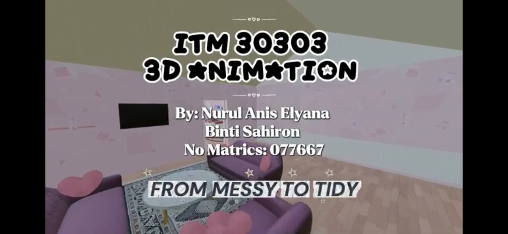
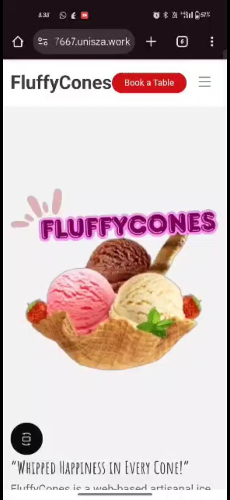
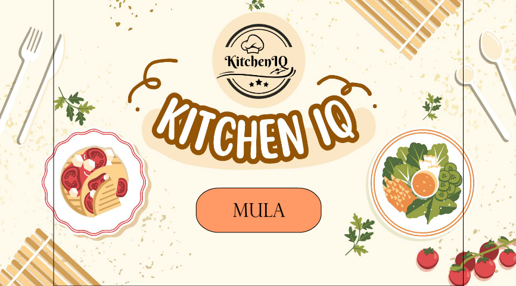
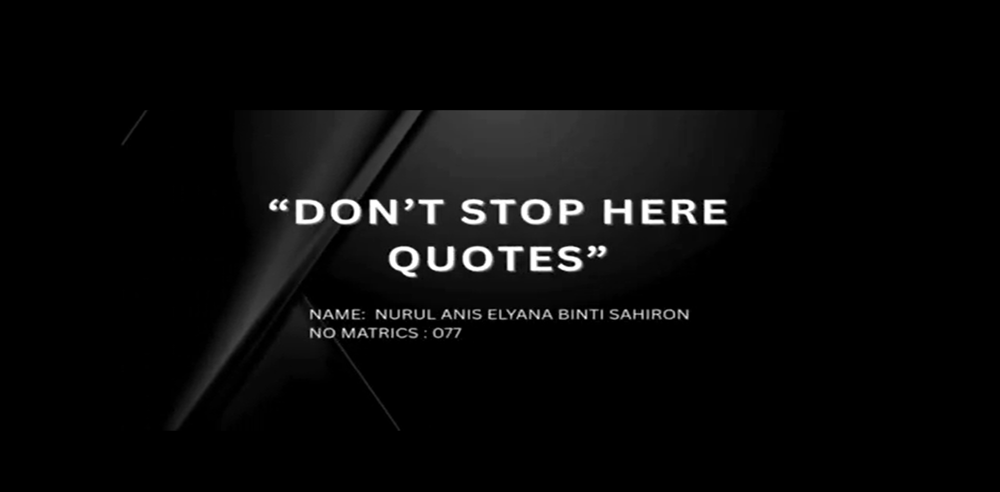

Academic Projects & Insights

AR IsyaratKu
An educational Augmented Reality application designed to help users learn sign language through interactive 3D experiences.

3D Room Transformation Animation
A messy room is transformed into a clean, organized, and attractive space using 3D animation techniques.

FluffyCones Website
A business website developed for an ice cream company, focusing on user experience and digital marketing.

Kitchen IQ
An educational Multimedia application designed to help users learn cook with simple recipes.

3D Animation Lab Test (Demonsration) Walking In The Town
Inspirational quotes that motivate individuals to keep learning, improving, and moving forward toward their goals despite challenges and obstacles.

Keep The Environment Clean
This animation promotes environmental cleanliness by encouraging people to throw rubbish in the proper bins and keep their surroundings clean. It aims to raise awareness about environmental responsibility and the importance of protecting nature.